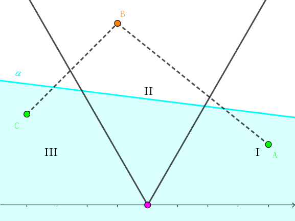

给定 $p$ 个点 $\left( x_i, y_i \right)$ 和 $n$ 个半平面 $a_i x + b_i y + c_i \geq 0$，每个半平面有一个代价 $w_i$。
你需要从中选出若干个半平面覆盖所有 $p$ 个点，求所需要花费的代价 (即选出的半平面的代价之和) 的最小值。
第一行包含两个正整数 $n, p$ ($n, p \leq 100$)，分别表示半平面的个数和点的个数。
接下来 $n$ 行，每行四个整数，其中第 $i$ 行包含四个整数 $a_i, b_i, c_i, w_i$ ($-10^6 \leq a_i, b_i, c_i \leq 10^6; a_i^2 + b_i^2 \neq 0; 1 \leq w_i \leq 10^6$)，描述第 $i$ 个半平面的方程及其代价。
接下来 $p$ 行，每行两个整数，其中第 $i$ 行包含两个整数 $x_i, y_i$ ($-10^6 \leq x_i, y_i \leq 10^6$)，表示第 $i$ 个点的坐标。
保证所有半平面对应的直线两两不平行。
输出一行一个整数，表示最少需要的时间。若无法覆盖所有 $p$ 个点，则输出 $-1$。
看似这些点和半平面的分布都是乱七八糟的，毫无头绪，我们尝试着将这些元素按照顺序处理。
首先解决一些平凡的情况：
如果一个点不被所有半平面所覆盖，那显然是无解滴。
如果某个半平面覆盖了所有点，那么用它先去更新一下答案，然后将其删去。
因此接下来的情况就是，存在覆盖的解 (半平面集合)，并且至少需要 $2$ 个。
我们枚举其中的两个半平面 $\alpha_1, \alpha_2$。如果它们覆盖了所有点，那么更新一下答案即可。否则，考虑当前未被覆盖的点，它们应该在 $\alpha_1 \cup \alpha_2$ 的补集中，换句话说，它们应该在半平面 $\bar \alpha_1$ 和半平面 $\bar \alpha_2$ 的交中。
由于这些直线两两不平行，因此两个半平面的交集是一个角 (及其内部)。
设 $O$ 为两条直线的交点，角为 $\angle \alpha O \beta$，我们可以先将角中的点按照 $O$ 点极角排序。
有一个结论是：如果对每个点，指定一个覆盖它的半平面 "管辖" 它，则一定存在一种方案，使得每个半平面所 "管辖" 的点是 (极角排序后) 一段连续的区间。
如果不成立，则存在一个半平面，它管辖的点不属于一个区间，如下图所示：
考虑半平面 $\alpha$，如果它覆盖了区域 $Ⅰ, Ⅲ$ 中的点 $A, C$，没有覆盖区域 $Ⅱ$ 中的点 $B$。则由于所有点均要被覆盖，考虑覆盖 $B$ 的半平面 $\beta$，它要么覆盖 $A$，要么覆盖 $C$。因此管辖 $A$ (或 $C$) 的半平面可以换成 $\beta$，证毕。
因此，我们可以预处理出每个半平面覆盖的若干连续区间，于是可以得到：对于任意一个区间 $\left[ l, r \right]$，覆盖 $\left[ l, r \right]$ 中的所有点所需的最小代价是多少。
这部分是 $O \left( p^2 \right)$ 的。
因为对于每个半平面，它所覆盖的 "连续区间" 的段数是 $O(n)$ 的。然后，对于子区间的延伸 (即 $f_{i, j - 1} \downarrow f_{i, j}, f_{i + 1, j} \downarrow f_{i, j}$)，可以在统计完所有半平面后按照 $r - l$ 从大到小更新下来即可。
最后再做一个裸的 $O \left( p^2 \right)$ 的区间 DP ——用 $g_i$ 表示覆盖 $\left[ 1, i \right]$ 所需的最小代价，枚举区间转移即可。
于是，对于给定的两个半平面，我们已经求得了包含这两个半平面中的所有方案中，总代价的最小值。因此只需枚举这两个半平面，就可以得到全局最小值。
时间复杂度 $O \left( n^3 + n^2 p^2 \right)$。
#include <bits/stdc++.h>
#define N 108
const int INF = 0x3f3f3f3f;
const double eps = 1e-8;
#define lt(x, y) ((x) < (y) - eps)
#define gt(x, y) ((x) > (y) + eps)
#define le(x, y) ((x) <= (y) + eps)
#define ge(x, y) ((x) >= (y) - eps)
#define eq(x, y) (le(x, y) && ge(x, y))
#define dot(x, y, z) (((y) - (x)) * ((z) - (x)))
#define cross(x, y, z) (((y) - (x)) ^ ((z) - (x)))
// 2D CG Template begins.
struct vec2 {
double x, y;
vec2 (double x0 = 0.0, double y0 = 0.0) : x(x0), y(y0) {}
vec2 * read() {scanf("%lf%lf", &x, &y); return this;}
inline vec2 operator - () const {return vec2(-x, -y);}
inline vec2 operator + (const vec2 &B) const {return vec2(x + B.x, y + B.y);}
inline vec2 operator - (const vec2 &B) const {return vec2(x - B.x, y - B.y);}
inline vec2 operator * (double k) const {return vec2(x * k, y * k);}
inline vec2 operator / (double k) const {return *this * (1.0 / k);}
inline double operator * (const vec2 &B) const {return x * B.x + y * B.y;}
inline double operator ^ (const vec2 &B) const {return x * B.y - y * B.x;}
inline double norm2() const {return x * x + y * y;}
inline double norm() const {return sqrt(x * x + y * y);}
};
struct line {
double A, B, C;
line (double A0 = 0.0, double B0 = 0.0, double C0 = 0.0) : A(A0), B(B0), C(C0) {}
line (const vec2 &u, const vec2 &v) : A(u.y - v.y), B(v.x - u.x), C(u ^ v) {}
inline vec2 normVec() const {return vec2(A, B);}
inline double norm2() const {return A * A + B * B;}
inline double operator () (const vec2 &P) const {return A * P.x + B * P.y + C;}
};
inline vec2 intersection(const line u, const line v) {
double Det = 1.0 / (u.A * v.B - u.B * v.A);
return vec2(u.B * v.C - u.C * v.B, u.C * v.A - u.A * v.C) * Det;
}
// 2D CG Template ends.
// main program begins.
int nl, np;
int w[N], f[N][N], g[N];
vec2 p[N], q[N];
line l[N];
inline void down(int &x, const int y) {x > y ? x = y : 0;}
int main() {
int i, j, k, la, m, cnt, ans = INF; vec2 I;
scanf("%d%d", &nl, &np);
for (i = 0; i < nl; ++i) scanf("%d%d%d%d", &j, &k, &m, w + i), l[i] = line(-j, -k, m);
for (i = 0; i < np; ++i) p[i].read();
for (i = 0; i < nl; ++i) {
for (j = 0; j < np; ++j) if (lt(l[i](p[j]), 0)) break;
if (j == np) down(ans, w[i]), w[i] = INF;
}
for (i = 0; i < nl; ++i) if (w[i] != INF)
for (j = i + 1; j < nl; ++j) if (w[j] != INF) {
I = intersection(l[i], l[j]);
for (cnt = k = 0; k < np; ++k)
if (lt(l[i](p[k]), 0) && lt(l[j](p[k]), 0)) q[cnt++] = p[k];
if (!cnt) {down(ans, w[i] + w[j]); continue;}
q[cnt] = vec2(NAN);
std::sort(q, q + cnt, [I] (const vec2 &A, const vec2 &B) {return gt(cross(I, A, B), 0);} );
for (k = 0; k < cnt; ++k) memset(f[k], 63, cnt << 2);
for (k = 0; k < nl; ++k) if (w[k] != INF && k != i && k != j)
for (la = -1, m = 0; m <= cnt; ++m)
ge(l[k](q[m]), 0) ? (~la || (la = m)) : (~la && (down(f[la][m - 1], w[k]), la = -1));
for (m = cnt - 1; m; --m)
for (k = 0; k < cnt - m; ++k)
down(f[k][k + m - 1], f[k][k + m]), down(f[k + 1][k + m], f[k][k + m]);
memset(g, 63, (cnt + 1) << 2);
for (*g = k = 0; k < cnt; ++k)
for (m = 0; m <= k; ++m) down(g[k + 1], g[m] + f[m][k]);
down(ans, w[i] + w[j] + g[cnt]);
}
printf("%d\n", ans >= INF ? -1 : ans);
return 0;
}
坑1：注意 DP 时的边界问题，不要忘记初始化以及漏转移。